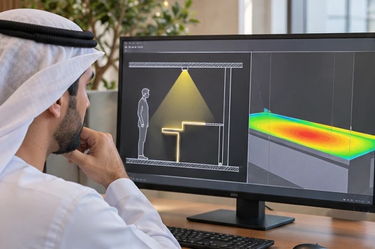
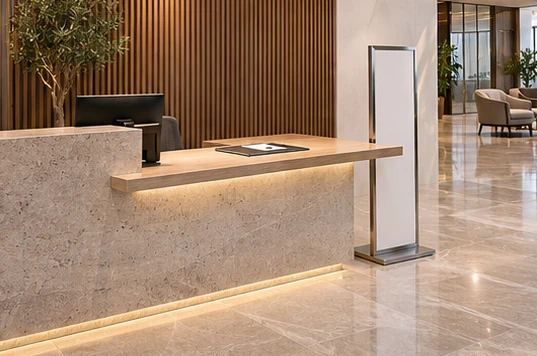
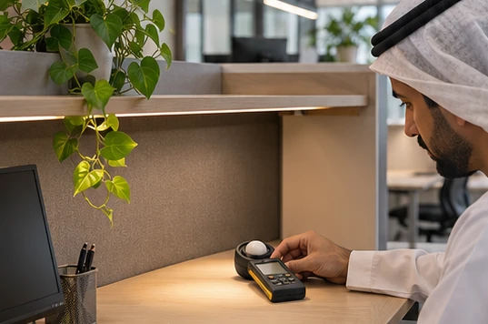
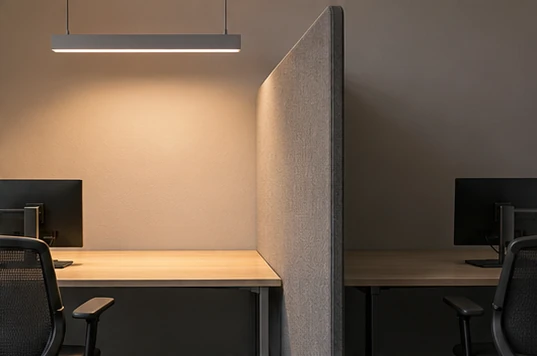
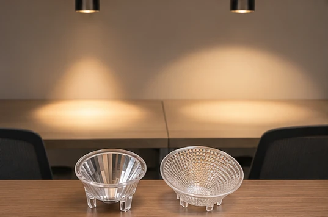
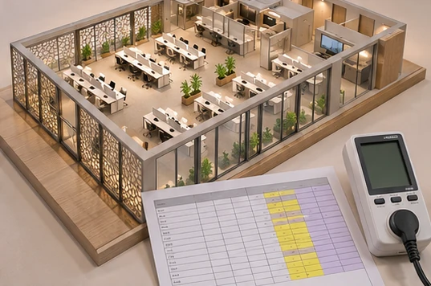
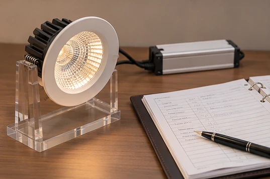
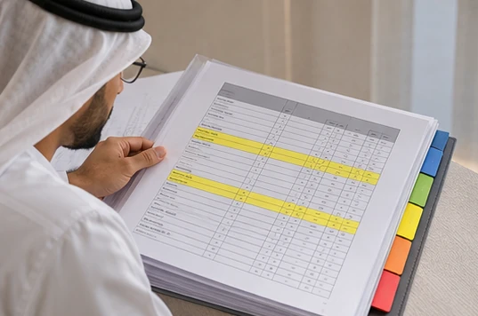

Start with the room reference
Commercial lighting consultants in Dubai can resolve a surprising number of discrepancies by asking which task, working-plane height and operating scene each DIALux row represents.

A reception desk, a vertical display and the floor beside them need different calculation surfaces because illuminance depends on the direction of the receiving plane.

Read the darkest point
Suppose an office task area averages 500 lx with a minimum of 250 lx: its minimum-to-average uniformity is 0.50, so it would miss an illustrative project target of 0.60 despite meeting a 500 lx average.

Before adding fittings, inspect the grid point in section for an overhead bulkhead, tall partition or incorrect luminaire orientation.

Replacing a narrow-beam optic with a wider distribution may lift the minimum between fittings, but rerun the perimeter and glare checks before accepting the change.

Check watts and maintained output separately
For a Masdar City office seeking sustainable lighting solutions, a 600 W installed lighting load across 100 square metres gives an illustrative 6 W/m², with the applicable allowance taken from the approved project brief.

Compare the proposed system watts and photometric file at the specified drive current, then document the maintenance factor and cleaning interval used for maintained lux.

In the OMEGALUX Lighting Guide, upload the text-based report and compare every Light scene 1 working plane across continuation pages, checking repeated room names against their storey and index.
